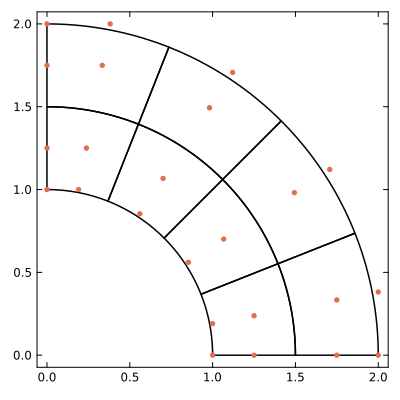
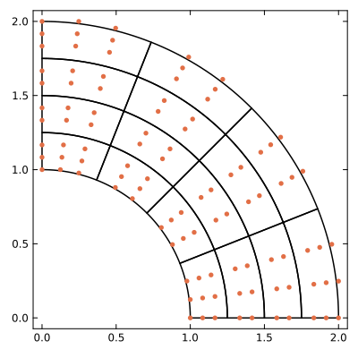

NURBSMesh
A NURBSMesh represents a single B-spline or NURBS patch: a tensor-product spline geometry defined by one knot vector and one polynomial degree per parametric direction, a net of control points, and one weight per control point (see the Splines topic guide). It is the starting point of every FerriteIGA program, and corresponds to the geometry as it would be designed in CAD.
A NURBSMesh is not used directly in the analysis. Instead, it is converted to a BezierGrid, which is a Ferrite grid, see the BezierGrid topic guide. The NURBSMesh is, however, the natural data structure for creating and refining geometries, which is the topic of this guide.
The NURBSMesh data structure
A NURBSMesh{pdim, sdim, T} has parametric dimension pdim (1 for curves, 2 for surfaces, 3 for solids) and spatial dimension sdim, and stores the following fields:
knot_vectors::NTuple{pdim, Vector{T}}: the knot vector in each parametric direction,orders::NTuple{pdim, Int}: the polynomial degree in each parametric direction,control_points::Vector{Vec{sdim, T}}: the control points,weights::Vector{T}: the NURBS weight of each control point,IEN::Matrix{Int}: the element connectivity; columnecontains the indices of the $\prod_d (p_d + 1)$ control points (basis functions) that are non-zero on elemente,INN::Matrix{Int}: for each control point, its index in each parametric direction.
The control points are numbered with the first parametric direction running fastest. For a surface with $n_1 \times n_2$ control points, control point $(i, j)$ has the global index $A = i + (j - 1) n_1$. The elements of the patch are the non-empty knot spans; spans of zero length, from repeated knots, are skipped.
Creating a patch by hand
A NURBSMesh is created from its knot vectors, degrees, control points and (optionally) weights. As an example, we create a quarter of an annulus with inner radius 1 and outer radius 2. In the angular (first) direction, the quarter circles are described with three control points and the weights $(1, 1/\sqrt{2}, 1)$, as in the Splines topic guide. In the radial (second) direction the geometry is straight, but since all directions must have the same degree in a BezierGrid, we use a quadratic basis there too, with the middle control points halfway between the inner and outer ones.
knot_vectors = ([0.0, 0.0, 0.0, 1.0, 1.0, 1.0], [0.0, 0.0, 0.0, 1.0, 1.0, 1.0])
orders = (2, 2)
control_points = Vec{2, Float64}[]
weights = Float64[]
for r in (1.0, 1.5, 2.0) # second direction (radial)
for (X, w) in zip(((1.0, 0.0), (1.0, 1.0), (0.0, 1.0)), (1.0, 1 / sqrt(2), 1.0)) # first direction
push!(control_points, Vec(r .* X))
push!(weights, w)
end
end
mesh = NURBSMesh(knot_vectors, orders, control_points, weights)NURBSMesh and with order (2, 2) and 1 cells and 9 nodes (control points) The patch has a single element, connected to all nine control points:
mesh.IEN9×1 Matrix{Int64}:
1
2
3
4
5
6
7
8
9Although the patch consists of a single quadratic element, the geometry is exact. Below, the patch is refined and converted to a BezierGrid to plot the elements and control points (the plotting function is defined in the source of this page).
fine = mesh
for ξ in (0.25, 0.5, 0.75)
global fine = knotinsertion(fine, ξ; dir = 1)
end
fine = knotinsertion(fine, 0.5; dir = 2)
plot_grid(BezierGrid(fine); size = (400, 400))
The control points do not, in general, lie on the geometry. In the figure above, the control points on the circular arcs lie outside the arcs. Only the control points at the corners of the patch, which are interpolated because the knot vectors are open, are guaranteed to lie on the geometry.
Generating patches
As in Ferrite, a grid of a line, rectangle or box can be generated with generate_grid. By using a BezierCell as the cell type, the result is directly a BezierGrid with a B-spline basis of the given degree, including the facet sets for the boundaries ("left", "right", "bottom", "top", ...) known from Ferrite:
grid = generate_grid(BezierCell{RefQuadrilateral, 2}, (4, 2), Vec((0.0, 0.0)), Vec((2.0, 1.0)))In addition, FerriteIGA can generate a number of other simple patches, such as curved beams and shells and exact (NURBS) geometries with circular holes and arcs, as a NURBSMesh with generate_nurbs_patch. The available geometries and their parameters are listed in the Mesh generation section of the API reference.
Refinement
Refinement of a patch is described in the Splines topic guide. FerriteIGA provides the three types of refinement as functions which take a NURBSMesh and return a new, refined NURBSMesh; the input is not modified. The parametric direction is given with the keyword argument dir.
knotinsertion(mesh, ξ; dir)inserts the knot valueξonce (h-refinement),orderelevation(mesh; dir)raises the degree by one (p-refinement),smoothnesselevation(mesh, new_knots; dir)raises the degree by one and then inserts the knots innew_knots(k-refinement).
The knot values to insert must lie in the parametric domain of the patch, which is $[0, 1]$ for the quarter annulus created above (the patches from generate_nurbs_patch use $[-1, 1]$). As an example, we refine the quarter annulus uniformly in both directions, and then elevate the degree in both directions:
refined = mesh
for ξ in (0.25, 0.5, 0.75)
global refined = knotinsertion(refined, ξ; dir = 1)
global refined = knotinsertion(refined, ξ; dir = 2)
end
refined = orderelevation(refined; dir = 1)
refined = orderelevation(refined; dir = 2)NURBSMesh and with order (3, 3) and 16 cells and 100 nodes (control points) Note that the degree must be the same in all directions to create a BezierGrid, so order elevation is typically applied in every direction.
plot_grid(BezierGrid(refined); size = (400, 400))
In-place refinement
Each function also has an in-place variant, knotinsertion!, orderelevation! and smoothnesselevation!, which operates on the arrays that define a patch instead of on a NURBSMesh. This avoids recomputing the connectivity after every step when many refinements are applied. The knot vectors, control points and weights are modified in-place; since orders is an immutable tuple, the functions that change the degree return the new orders. A new NURBSMesh is created from the arrays afterwards.
knot_vectors = map(copy, mesh.knot_vectors)
control_points = copy(mesh.control_points)
weights = copy(mesh.weights)
orders = mesh.orders
for ξ in (0.25, 0.5, 0.75)
knotinsertion!(knot_vectors, orders, control_points, weights, ξ; dir = 1)
end
orders = orderelevation!(knot_vectors, orders, control_points, weights; dir = 1)
orders = orderelevation!(knot_vectors, orders, control_points, weights; dir = 2)
refined = NURBSMesh(knot_vectors, orders, control_points, weights)NURBSMesh and with order (3, 3) and 4 cells and 40 nodes (control points) Copy the arrays of a mesh before refining them in-place. The arrays of a NURBSMesh are not copied when the mesh is created, so modifying them in-place leaves the original mesh in an inconsistent state.
Evaluating the geometry
The geometry map of a patch can be evaluated at a parametric coordinate with eval_parametric_coordinate, and a coordinate in the reference (parent) domain $[-1, 1]^{d}$ of an element can be mapped to the parametric domain of the patch with parent_to_parametric_map:
mesh = generate_nurbs_patch(:rectangle, (4, 2), 2; cornerpos = (0.0, 0.0), size = (2.0, 1.0))
ξ = parent_to_parametric_map(mesh, 1, Vec((0.0, 0.0))) # center of the first element
eval_parametric_coordinate(mesh, Vec(Tuple(ξ)))2-element Vec{2, Float64}:
0.25
0.25eval_parametric_coordinate currently does not take the NURBS weights into account, and is therefore only exact for B-spline patches. To evaluate the geometry of a NURBS patch, use BezierCellValues and spatial_coordinate, as described in the BezierCellValues topic guide.